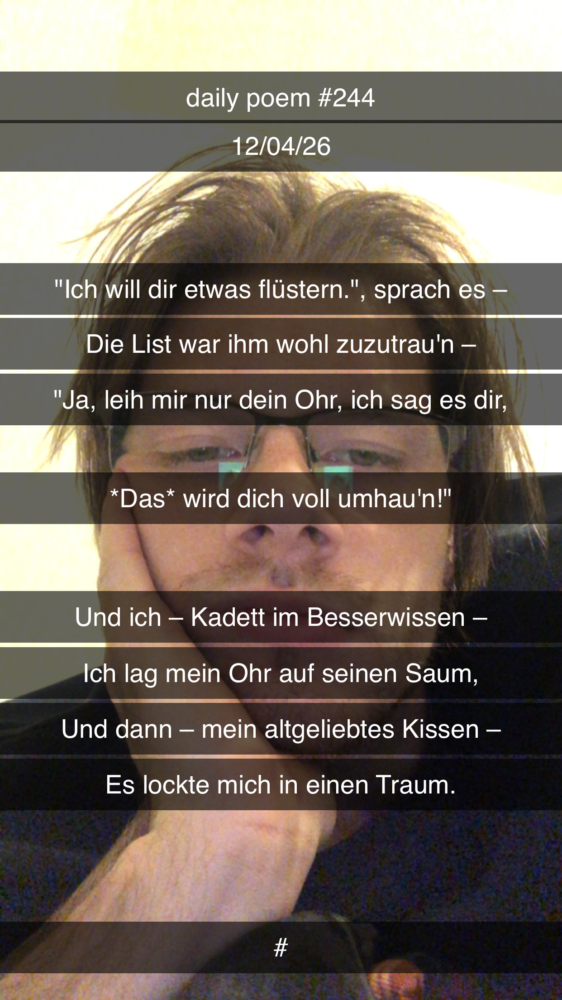

Ein flauschiger Verrat
"Ich will dir etwas flüstern", sprach es –
Die List war ihm wohl zuzutrau'n –
"Ja, leih mir nur dein Ohr, ich sag es
Dir, das wird dich voll umhau'n!"
Und ich – Kadett im Besserwissen –
Legte mein Ohr auf seinen Saum;
Und es – mein altgeliebtes Kissen –
Lockte mich in einen Traum.
